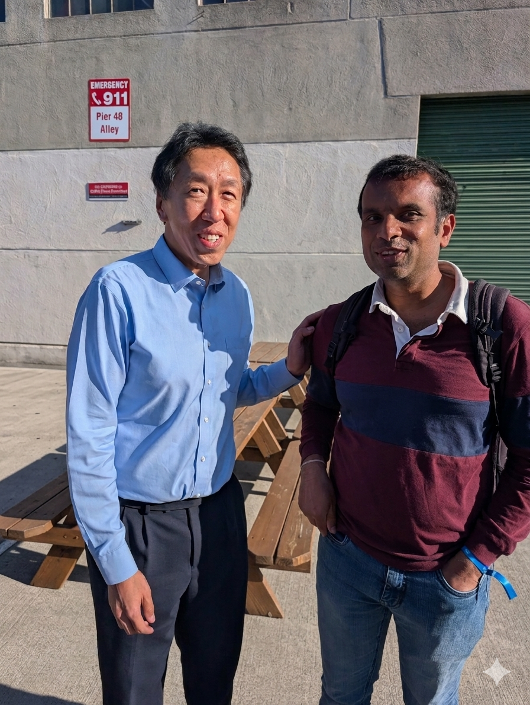

Demos, Takeaways, and the Industry Challenges Shaping Software Engineering
Published on April 29, 2026
I just spent the last two days at the AI Dev 26 conference hosted by DeepLearning.AI at Pier 48, and the energy was simply phenomenal. It's one thing to read about the shift toward agentic engineering, but it's another entirely to be sharing the floor with over 3,000 pioneering developers actively building these tools.
The ecosystem on display was massive. Between the hands-on workshops and networking, it was incredible to see builders from major networks like AMD, AWS, Oracle, and Google rubbing shoulders with founders from agile, emerging AI startups.
Personal Highlight: I managed to grab a photo with Andrew Ng! His work has paved the way for so many of us in this space, and meeting him was an absolute honor.

The Good Stuff: What I Loved & Tried
- Google's Latest: Paige Bailey from Google DeepMind gave an awesome update on what's new and next, particularly covering Google's latest audio, video, and Gemini models.
- Hands-on Custom Models: I actually got my hands dirty and built a custom summarizer model using Oumi! Huge thanks to Stefan Webb and Manos Koukoumidis for showing how to go from a prompt to a specialized model so quickly.
- Networking: Had a really nice time connecting with Amrita Venkatraman from Cursor after her session on cloud-native agent factories.
Post-Session Deep Dives: Questions I Asked the Speakers
One of the best parts of the conference was having the opportunity to catch the speakers after their sessions. I had some incredible deep-dive discussions on the reality of building these systems. Here are the core questions I brought up with them:
Federated Learning Complexity
Discussed with Daniel Beutel (Flower Labs)
"Federated learning solves data privacy, but it shifts the complexity to training. How do you ensure robustness when client data distributions are highly uneven or conflicting?"
Generative UI Consistency
Discussed with Atai Barkai (CopilotKit)
"How do you prevent unpredictability and maintain UX consistency when the interface itself is being actively generated or modified by an AI agent?"
Voice UI & Privacy
Discussed with Ashwyn Sharma (Vocal Bridge AI)
"Since voice naturally captures sensitive information, how do you handle privacy, consent, and compliance while maintaining real-time processing and analytics?"
The Real RAG Bottlenecks
Discussed with Jerry Liu (LlamaIndex)
"Most RAG failures stem from data ingestion and retrieval rather than the model itself. Where do you see the biggest bottleneck today in production LlamaIndex pipelines?"
Multi-Agent Coordination & Sandboxing
Discussed with João Moura (CrewAI), Andi Partovi (Veris AI), and Tushar Jain (Docker)
"As multi-agent systems scale, how do you prevent coordination overhead from outweighing specialization? And how do you ensure behavior observed in a sandboxed agent environment accurately reflects what will happen in production when autonomy and tool access increase?"
The Legal Angles of Massive Tooling
Post-session reflections on Apify
"I heard their reasoning on putting 25,000 tools in the hands of agents. It has insanely high potential for many use cases, but from a legal/compliance angle, I'm still not fully convinced. Definitely something to dig into more."
The Reality of a Packed Schedule: What I Missed
With three breakout stages running simultaneously across both days—covering everything from Next-Gen Tools to Agent Observability and Foundation Models—it was physically impossible to see it all. I know I missed some incredible insights from teams at Databricks, Snowflake, and Temporal. If you caught those sessions, I'd love to hear your takeaways.